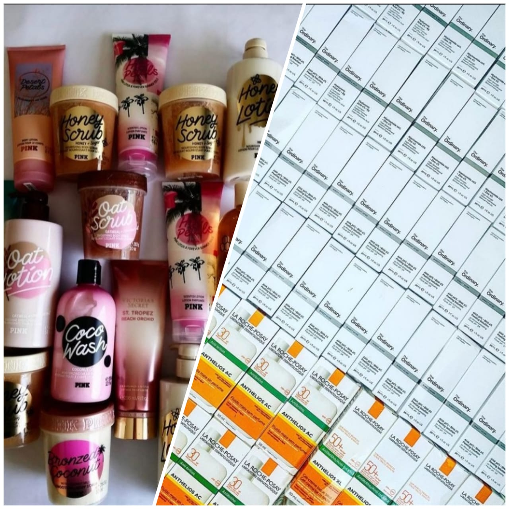
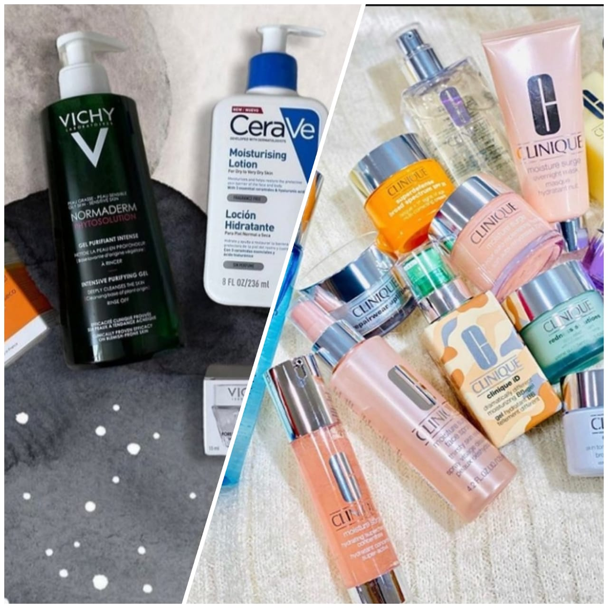
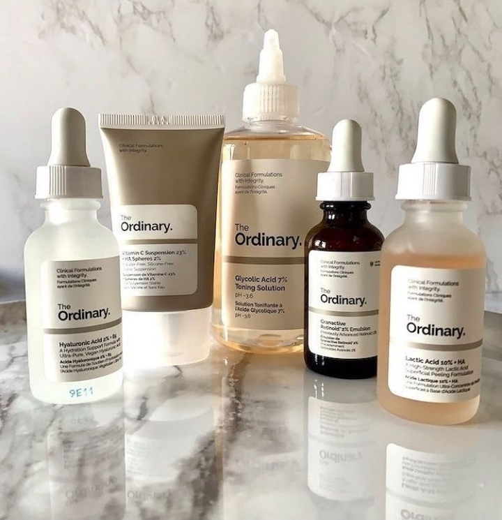
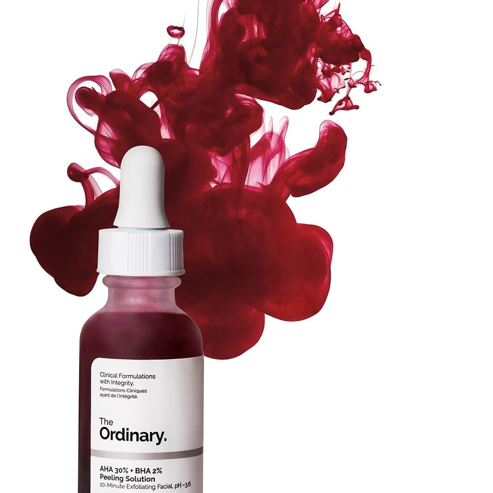
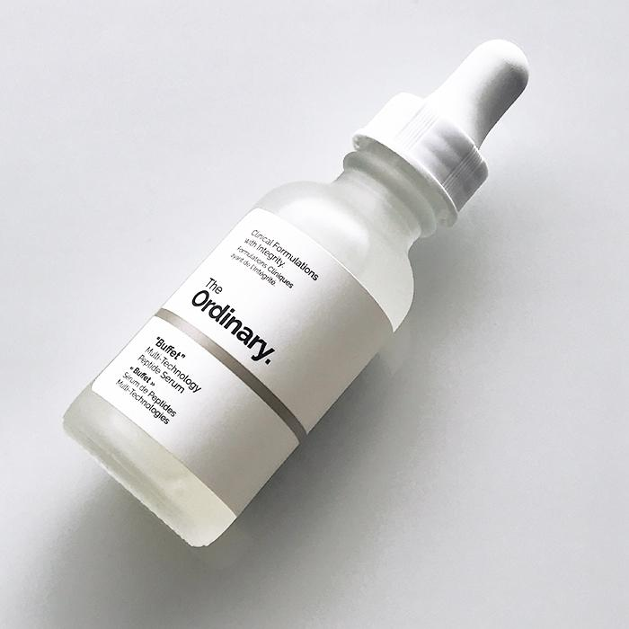
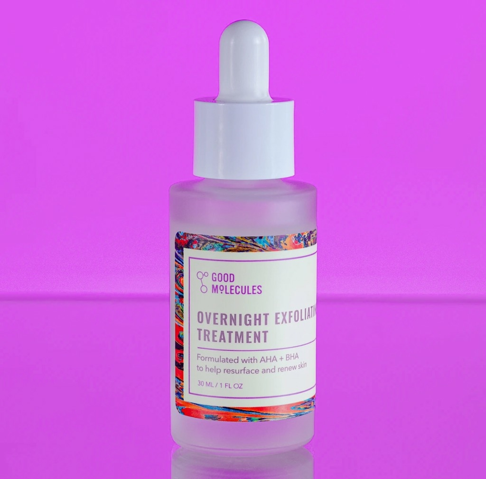
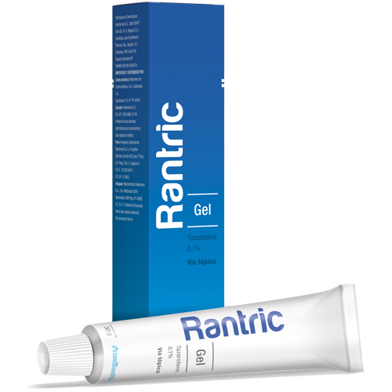
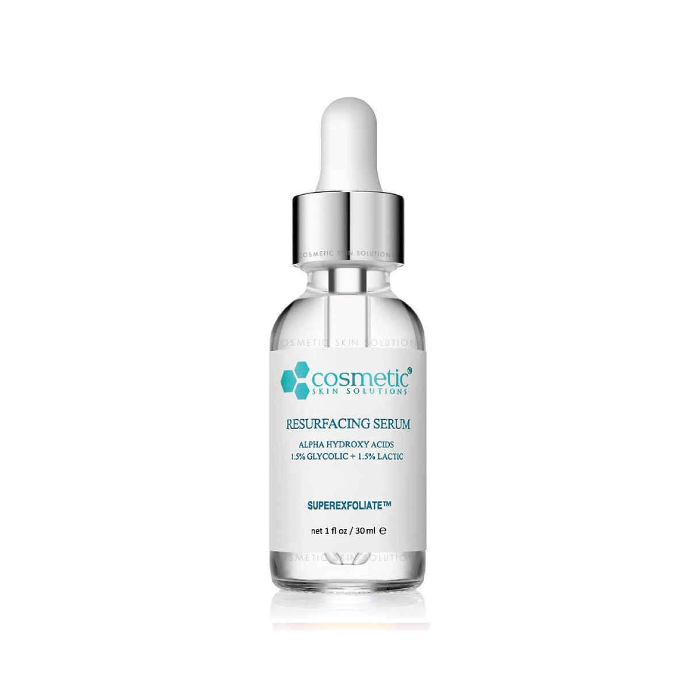

SkinShore es una tienda en linea por la red social Instagram donde nos dedicamos a ofrecer productos dermocosmeticos y dermatologios originales y con garantia, que sirven para tener una piel más limpia y mas radiante cada día, contamos con mas de 900 referencias y contamos con envios seguros por DHL y Correos de México. También contamos con entregas personales en cualquier estación del metro de la Ciudad de México y lugares especificos del Estado de México.
La idea surgio de mi socia Andrea Reyes Hernandez, que junto conmigo ideamos un plan para comenzar nuestro propio negocio en el año 2019, se implementó primero los productos básicos y algunos productos de maquillaje. Iniciamos una cuenta en Instagram donde nuetras client@s se ponen en contacto con nosotras por mensaje directo. Uno de nuestros principales productos es la linea de The Ordinay, que es pedida desde Canadá, y contamos con recibos de constancia de aduana y recibos de compra de la marca.
Algunas de nuestras marcas son..
Para hacer una compra de un producto que no se encuentra en la lista, se les hace la cordial invitación a poner en nuestro contacto, la marca, nombre y tamaño del producto que quieren comprar y nosotras nos podndremos en contacto contigo para ofrecerte nuestra atención y brindarte tu producto a los mejores precios.
A continuación se muestran algunas imágenes de los productos. Para brindarte ayuda para saber que producto debes comprar, es importante saber que tipo de piel eres para asesorarte mejor, pero si existe la posibilidad de que tengas dudas, puedes escribirle a nuetra dermatóloga de confianza, que podrá brindarte ayuda si vienes de nuestra parte. Si tu problema de la piel es más grave, puedes acceder a una cita con la dermtóloga con un 15% de descuento diciendo que vienes de SkinShore (nota: sólo en caso de que ya hayas comprado con nosotras anteriormente).



Nos encanta ayudarlas en todo!, así que decidimos que al momento de su entrega, recibieran una nota de envio con el instructivo de uso de los productos así como identificar los productos más delicados de usar. Con la siguiente estructura:
Los productos veganos con etiqueta naranja, se pueden utilizar de día y de noche y no contamina su empaque. Son dóciles a la piel y una perfecta opción para pincipiantes
Los productos de etiqueta en morado, son especialmente para personas que tienen la piel seca y son perfectos para utilizar de día y noche.
Los productos con etiqueta verde son especiales para piel grasa y son perfectos para piel con ácne y poros abiertos, además que refrecan gracias a sus componentes naturales combinados.
Los productos con etiqueta café son especiales para piel con problemas graves de ácne y son especialmente recomendados por la dermatóloga y son de uso delicado, deben ser supervisados además de ser utilizados con bloqueador solar.
Este es un exfoliante químico o mejor conocido como peeling solution que contiene alfa hidroxiácidos conocidos como AHA que son: ácido glicólico, láctico, tartárico y cítrico en un 30%. Y, beta-hidroxiácidos que es el ácido salicílico en un 2%. Estos son exfoliantes que llegarán a una capa profunda de la epidermis. Los beneficios y mayores aportaciones a la piel de este exfoliante es que es capaz: poder limpiar a profundidad los poros, previniendo puntos negros, estimula la producción de colágeno, mejorar la barrera cutánea, elimina manchas, da luminosidad, evita los brotes y controlar la producción de sebo.

Es un suero ideal para pieles maduras esta fórmula combina una gama completa de tecnologías estudiadas para combatir de una vez múltiples signos de envejecimiento. Las tecnologías son un complejo de péptidos Matrixyl 3000 (con palmitoil-pentapéptido 35), complejo de péptidos Matrixyl Synthe'6 (con palmitoil tripéptido-38), complejo de péptidos Syn-Ake (con dipéptido diaminobutiroil bencilamida diacetato), complejo de péptidos Relistase (con acetilarginiltriptofil difenilglicina), complejo de péptidos Argirelox (con acetil hexapéptido-8, pentapéptido-18), complejo probiótico (con lisado de Lactococcus lactis), en una base de 11 aminoácidos protectores de la piel y de múltiples completos de ácido hialurónico"

Es un suero que logra hacer despierta con una tez más lisa y clara con el tratamiento exfoliante nocturno de Good Molecules. Esta combinación de 10% de alfa y beta hidroxiácidos ayuda a resurgir y renovar, alisando las células muertas de la piel y desatascando los poros para revelar una piel visiblemente radiante. Disminuya los signos visibles del envejecimiento con una piel suave y brillante causada por el ácido glicólico y el ácido láctico que exfolian la superficie de la piel. Reduce los brotes y las imperfecciones a medida que el ácido salicílico penetra profundamente en los poros para disolver las obstrucciones.

Los retinoides son un tipo de compuesto químico que están relacionados químicamente con la vitamina A. Se emplean en medicina, principalmente debido a su acción sobre el crecimiento de las células epiteliales, tienen muchas funciones importantes en el organismo, incluyendo un papel importante en la visión, regulación de la proliferación y diferenciación celular, crecimiento óseo, función inmune, y activación de genes supresores de tumores.
Los retinoides se utilizan en el tratamiento de muchas enfermedades diversas y son eficaces en el tratamiento de una serie de condiciones dermatológicas tales como los trastornos inflamatorios de la piel, cánceres de piel, trastornos de aumento de la renovación celular (por ejemplo, la psoriasis), y fotoenvejecimiento.

Es un compuesto químico que desempeña importantes roles en varios procesos bioquímicos, como la fermentación láctica. Es un ácido carboxílico, con un grupo hidroxilo en el carbono adyacente al grupo carboxilo, lo que lo convierte en un ácido α-hidroxílico (AHA) de fórmula H3C-CH(OH)-COOH (C3H6O3). En solución puede perder el hidrógeno unido al grupo carboxilo y convertirse en el anión lactato.
Entre las ventajas que este ácido tiene para la piel es que está muy indicado para las pieles secas porque mejora la barrera lipídica de la piel y tiene la capacidad de atraer el agua evitando la pérdida de la hidratación. Pero también funciona como un potente exfoliante, aunque es más suave que otros ácidos como el glicólico, por eso es perfecto para todo tipo de piel. Es capaz de mejorar la textura, combatir las marcas de acné y suavizar las arrugas.

Nuestro mayor interes es que las compras sean lo más comodas para todo el público, es por ellos que imprementamos diferentes tipo de envio y de difrerentes precios para la comodidad económica de nuestro cliente. Las entregas pueden ser mediante envios nacionales o presenciales en todas las estaciones del metro, sin embargo, el método de entrega personal también tiene un costo que se deberá pagar a nuestro repartidor al momento de la entrega.
Los métodos de entrega precios son:
| Correos de México | Fedex | DHL | Estafeta | PaqueteExpress | Personales |
| $70 a todo México | $100 a CDMX y $200 internacionales | $100 México y $180 internacionales | $90 todo México | $60todo México | $50 al momento de entrega |
Como todas, siempre tenemos la duda de si los productos son de marca o si son pirata o bien, rellenados. En SkinShore nos encargamos de demostrarte lo contrario, las páginas donde compramos nuestros productos son completamente seguras además de que son productos top del mercado. NUNCA DEBEN DE COMPRAR EN PÁGINAS DONDE NO LES MUETREN REFERENCIAS NI FACTURAS! Nuestras tiendas favoritas para comprar son: